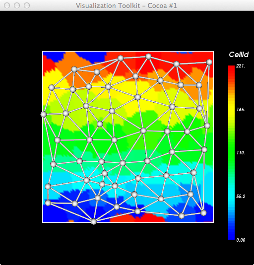
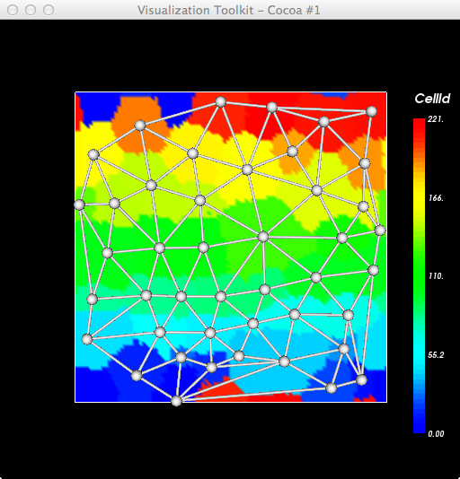
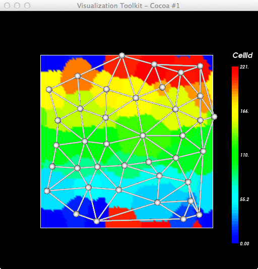

Thinking about the transitions in foam, e.g. collapse of edges, etc. Displaying a Delaunay triangulation of the cells' centers of mass. E.g. looking at MCS 200, 280, 360.



This script post-processes the lattice data (.vtk) dumped by cc3d (+ extra files containing centers of mass):
~/Documents/Glazier/Ben/foam$ ty colorIds_com.py
import vtk
#from vtk.util.numpy_support import numpy_to_vtk, vtk_to_numpy
import sys
import string
argc = len(sys.argv)
#print 'argc=',argc
if argc < 2:
print 'Usage: ',sys.argv[0],' root-filename '
raise ValueError, 'Too few input args'
subdir = '/Users/heiland/CC3DWorkspace/foam_xml_02_22_2012_16_02_13/LatticeData/'
idx=1
root_fname = sys.argv[idx]
#print 'root_fname=',root_fname
idx=idx+1
# blue -> red LUT
lutBlueRed = vtk.vtkLookupTable()
lutBlueRed.SetHueRange(0.667,0.0)
lutBlueRed.Build()
ren1 = vtk.vtkRenderer()
renWin = vtk.vtkRenderWindow()
renWin.AddRenderer(ren1)
iren = vtk.vtkRenderWindowInteractor()
iren.SetRenderWindow(renWin)
reader = vtk.vtkDataSetReader()
reader.SetFileName(subdir + root_fname + '.vtk')
aax = vtk.vtkAssignAttribute()
aax.SetInputConnection(reader.GetOutputPort())
aax.Assign("CellId","SCALARS","POINT_DATA")
#aax.Assign("CellType","SCALARS","POINT_DATA")
aax.Update()
srange = aax.GetOutput().GetScalarRange()
print 'CellId range: ',srange # CellId:
#-------------------
mapper = vtk.vtkDataSetMapper()
mapper.SetInputConnection(aax.GetOutputPort())
#mapper.ScalarVisibilityOff()
mapper.ScalarVisibilityOn()
mapper.SetScalarRange(srange)
mapper.SetLookupTable(lutBlueRed)
actor = vtk.vtkActor()
actor.SetMapper(mapper)
#actor.GetProperty().SetInterpolationToFlat()
bf=vtk.vtkProperty()
#bf.SetSpecular(0.0)
#bf.SetDiffuse(0.0)
#bf.SetAmbient(1.0)
#bf.SetAmbientColor(1.0,.38,.28)
bf.SetColor(0.0,0.0,0.0)
bf.SetColor(1.0,.38,.28)
actor.SetBackfaceProperty(bf)
#actor.GetProperty().SetOpacity(0.5)
ren1.AddActor(actor)
#----------------------
outline = vtk.vtkOutlineFilter()
outline.SetInputConnection(aax.GetOutputPort())
mapOutline = vtk.vtkPolyDataMapper()
mapOutline.SetInputConnection(outline.GetOutputPort())
outlineActor = vtk.vtkActor()
outlineActor.SetMapper(mapOutline)
outlineActor.GetProperty().SetColor(1, 1, 1)
ren1.AddActor(outlineActor)
#----------------------
scalarBar = vtk.vtkScalarBarActor()
#scalarBar.SetLookupTable(lutBlueRed)
scalarBar.SetLookupTable(mapper.GetLookupTable())
#scalarBar.GetPositionCoordinate().SetCoordinateSystemToNormalizedViewport()
#scalarBar.GetPositionCoordinate().SetValue(0.8,0.05)
#scalarBar.SetOrientationToVertical()
scalarBar.SetWidth(0.08)
#scalarBar.SetHeight(0.9)
scalarBar.SetPosition(0.9,0.1)
#scalarBar.SetLabelFormat("%-#6.3f")
#scalarBar.SetLabelFormat("%-#3.1f")
#scalarBar.GetLabelTextProperty().SetColor(1,1,1)
#scalarBar.GetTitleTextProperty().SetColor(1,0,0)
scalarBar.SetTitle('CellId')
#scalarBar.SetTitle('CellType')
ren1.AddActor2D(scalarBar)
#------------------------------------------
comPts = vtk.vtkPoints()
filename = 'com_483.vtk'
filename = subdir + root_fname + '.dat'
fp = open(filename, 'r')
for line in fp:
# print line,
tmp = line.split()
x = float(tmp[0])
y = float(tmp[1])
comPts.InsertNextPoint(x,y,0)
pd = vtk.vtkPolyData()
pd.SetPoints(comPts)
balls = vtk.vtkSphereSource()
balls.SetRadius(2.0)
glyphPoints = vtk.vtkGlyph3D()
glyphPoints.SetInput(pd)
glyphPoints.SetSource(balls.GetOutput())
glyphMapper = vtk.vtkPolyDataMapper()
glyphMapper.SetInputConnection(glyphPoints.GetOutputPort())
glyph = vtk.vtkActor()
glyph.SetMapper(glyphMapper)
#glyph.GetProperty().SetDiffuseColor(tomato)
ren1.AddActor(glyph)
#------------------------------------------
delny = vtk.vtkDelaunay2D()
delny.SetInput(pd)
delny.SetTolerance(0.001)
mapMesh = vtk.vtkPolyDataMapper()
mapMesh.SetInputConnection(delny.GetOutputPort())
meshActor = vtk.vtkActor()
meshActor.SetMapper(mapMesh)
meshActor.GetProperty().SetColor(.1, .2, .4)
meshActor.GetProperty().SetColor(.9, .9, .9)
meshActor.GetProperty().SetRepresentationToWireframe()
ren1.AddActor(meshActor)
# We will now create a nice looking mesh by wrapping the edges in tubes,
# and putting fat spheres at the points.
extract = vtk.vtkExtractEdges()
extract.SetInputConnection(delny.GetOutputPort())
tubes = vtk.vtkTubeFilter()
tubes.SetInputConnection(extract.GetOutputPort())
tubes.SetRadius(0.5)
tubes.SetNumberOfSides(6)
mapEdges = vtk.vtkPolyDataMapper()
mapEdges.SetInputConnection(tubes.GetOutputPort())
edgeActor = vtk.vtkActor()
edgeActor.SetMapper(mapEdges)
#edgeActor.GetProperty().SetColor(peacock)
ren1.AddActor(edgeActor)
#------------------------------------------
renWin.SetSize(512,512)
renWin.Render()
w2i = vtk.vtkWindowToImageFilter()
w2i.SetInput(renWin)
iw = vtk.vtkPNGWriter()
iw.SetInput(w2i.GetOutput())
iw.SetFileName(root_fname+".png")
#print root_fname,', # unique cells=',len(unique_cell_ids)
#iw.Write()
iren.Start()
The following code to dump COM (x,y) was inserted into core/pythonSetupScripts/CMLFieldHandler.py: writeFields() (at the end of that function)
comDataFileName = join(self.outputDirName,self.outputFileCoreName+"_"+mcsFormattedNumber+".dat") # e.g. /path/Step_01.vtk
comFP = open(comDataFileName, "w")
# also dump Centers of Mass for cells
from PySteppables import CellList
# inventory = self.currentDrawingParameters.bsd.sim.getPotts().getCellInventory()
inventory = self.sim.getPotts().getCellInventory()
cellList = CellList(inventory)
for cell in cellList:
if cell.id:
# print cell.xCOM,cell.yCOM
comStr = '%f %f\n' % (cell.xCOM, cell.yCOM)
comFP.write(comStr)
# print MODULENAME,' ------------ end COM ---------------'
comFP.close()